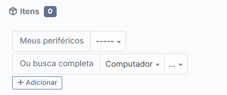

Identificação
| Tipo | Processo Operacional |
| Título | Abertura de Chamados com Associação de Ativos no GLPI |
| Área responsável | GTIC - Gerência de Tecnologia da Informação e Comunicação |
| Setor | Saúde Digital Atende |
| Data de criação | Junho / 2026 |
| Versão | 1.0 |
Sobre este processo: Este documento orienta a Central de Serviços na abertura de chamados que envolvem ativos físicos no GLPI, incluindo o fluxo para quando o ativo não for encontrado na associação do item.
Objetivo
Padronizar a abertura de chamados com associação de ativos no GLPI, garantindo que o chamado principal seja registrado pela Central de Serviços, que o ativo seja associado sempre que localizado e que, quando o ativo não for encontrado, seja aberto um chamado vinculado/associado para regularização e esse chamado seja vinculado ao chamado principal.
Essa associação entre chamados mantém tudo atrelado e permite identificar nos relatórios quantos chamados foram abertos para determinado ativo.
Fluxo resumido
1. RegistrarA Central de Serviços recebe a solicitação e abre o chamado no GLPI.
→
2. Associar o ativoLocaliza o equipamento e o vincula ao chamado pela área de Itens.
→
3. RegularizarSe o ativo não for localizado, abre um chamado vinculado para cadastro ou correção.
→
4. AtenderO Técnico N2 Suporte regulariza o ativo, mantém o vínculo e executa o atendimento.
Processos
Processo 1 - Abertura com ativo localizado
PROCESSO 1
Abertura do Chamado pela Central de Serviços
Central de Serviços
▾
| Nº | Ação / Descrição | Responsável | Observação |
|---|---|---|---|
| 1 | Receber a solicitação do usuário por telefone, e-mail ou Rocket.Chat e coletar nome, e-mail, unidade, setor, descrição da demanda e identificação do equipamento. | Central de Serviços | Solicitar número patrimonial, número de série ou nome do equipamento, quando houver. |
| 2 | Acessar o GLPI pelo caminho Assistência → Criar chamado e preencher os campos com base no template exibido na tela. | Central de Serviços | Registrar as informações coletadas e preencher os campos obrigatórios antes de salvar. |
| 3 | Preencher os campos do chamado exibidos no template: Entidade, Tipo, Categoria, Status, Origem da requisição e Localização. | Central de Serviços | A categoria deve seguir o catálogo de serviços. O chamado inicia com status Novo. |
| 4 | Preencher a seção Atores, informando o Requerente e, quando necessário, observador ou atribuído. | Central de Serviços | Confirmar se o requerente corresponde ao usuário que abriu a solicitação. |
| 5 | Na seção Itens, clicar em "+ Adicionar" e buscar o ativo por patrimônio, número de série ou nome do equipamento. | Central de Serviços | Confirmar se o item localizado corresponde ao equipamento informado pelo usuário. |
| 6 | Selecionar o ativo correto e confirmar a associação ao chamado. | Central de Serviços | O chamado deve manter o histórico do ativo atendido. |
| 7 | Salvar o chamado e conferir se o item associado ficou registrado corretamente. | Central de Serviços | Após escalonamento para um grupo técnico, o chamado passa a ficar atribuído conforme regra do GLPI. |

Processo 2 - Abertura com ativo não localizado
Importante: Se o ativo não for encontrado na aba Itens, a Central de Serviços deve prosseguir com a abertura do chamado principal e abrir um chamado vinculado/associado para regularização do ativo. Esse chamado vinculado/associado deve ser vinculado ao chamado principal para manter tudo atrelado.
PROCESSO 2
Abertura do Chamado Vinculado/Associado
Central de Serviços
▾
| Nº | Ação / Descrição | Responsável | Observação |
|---|---|---|---|
| 1 | Prosseguir com a abertura do chamado principal, mesmo sem localizar o ativo na aba Itens. | Central de Serviços | Registrar na descrição que o ativo não foi localizado para associação no momento da abertura. |
| 2 | No chamado principal, informar os dados disponíveis do equipamento: patrimônio informado, número de série, unidade, setor, usuário responsável e descrição do problema. | Central de Serviços | Essas informações serão usadas pelo Técnico N2 Suporte para localizar ou regularizar o ativo. |
| 3 | Abrir um chamado vinculado/associado para inventariar o ativo não localizado, com categoria Desktop / Inventariar. | Central de Serviços | O chamado deve ser direcionado ao Técnico N2 Suporte e usar o modelo de descrição abaixo. |
| 3.1 |
Modelo de descrição do chamado:
Solicito inventariar o ativo físico informado no chamado principal, pois o equipamento não foi localizado no cadastro de ativos do GLPI. Chamado principal: nº XXXXX Patrimônio informado: nº ou não informado Número de série: nº ou não informado Motivo: ativo não localizado no GLPI e necessário para associação ao chamado principal. |
||
| 4 | Escalonar o chamado vinculado/associado para o grupo técnico Técnico N2 Suporte. | Central de Serviços | O Técnico N2 Suporte será responsável por regularizar o ativo e associá-lo ao chamado principal. |
Processo 3 - Atuação do Técnico N2 Suporte
PROCESSO 3
Regularização e Associação do Ativo
Técnico N2 Suporte
▾
| Nº | Ação / Descrição | Responsável | Observação |
|---|---|---|---|
| 1 | Acessar o chamado vinculado/associado escalonado para Técnico N2 Suporte e verificar qual é o chamado principal associado. | Técnico N2 Suporte | Usar a associação entre chamados para manter o contexto do atendimento. |
| 2 | Pesquisar o ativo no GLPI usando patrimônio, número de série, nome do equipamento, unidade e setor. | Técnico N2 Suporte | Conferir também possíveis divergências de cadastro. |
| 3 | Se o ativo existir, corrigir ou complementar o cadastro quando necessário. | Técnico N2 Suporte | Garantir que o ativo possa ser localizado corretamente em chamados futuros. |
| 4 | Se o ativo não for encontrado pelo Técnico N2 Suporte, dar prosseguimento ao chamado vinculado/associado de inventário já aberto pela Central de Serviços conforme o item 3 do Processo 2. | Técnico N2 Suporte | Não abrir novo chamado. O atendimento não deve prosseguir sem que o ativo esteja cadastrado e regularizado no GLPI. |
| 5 | Somente após inventariar ou regularizar o ativo, acessar o chamado principal, ir até a aba Itens, clicar em "+ Adicionar item" e associar o ativo ao chamado. | Técnico N2 Suporte | O item associado deve indicar qual equipamento está vinculado à solicitação original. |
| 6 | Executar o atendimento do chamado principal após a associação do ativo. | Técnico N2 Suporte | A execução do chamado deve ocorrer com o ativo já associado para garantir rastreabilidade nos relatórios. |
| 7 | Registrar no acompanhamento dos dois chamados que o ativo foi localizado ou inventariado, associado ao chamado principal e que o atendimento foi executado. | Técnico N2 Suporte | Informar o número patrimonial ou identificação usada na associação. |
| 8 | Encerrar o chamado vinculado/associado do Técnico N2 Suporte, alterando o status para "Fechado". | Técnico N2 Suporte | O chamado vinculado/associado só deve ser fechado após o ativo estar inventariado, associado e o chamado principal executado. |
Definições
| Termo | Definição |
|---|---|
| GLPI | Sistema de gestão de chamados e inventário de TI utilizado pela GTIC. |
| Ativo | Equipamento ou item de TI cadastrado no inventário do GLPI, como computador, monitor, impressora, roteador ou item equivalente. |
| Chamado principal | Chamado aberto pela Central de Serviços para registrar a solicitação do usuário. |
| Item associado | Vínculo do ativo ao chamado na aba Itens do GLPI. |
| Chamado vinculado/associado | Chamado vinculado/associado aberto para regularizar o ativo não localizado e manter relação com o chamado principal. |
| Central de Serviços | Equipe responsável pela abertura dos chamados no GLPI. |
| Técnico N2 Suporte | Técnico N2 Suporte responsável por localizar, cadastrar, corrigir ou inventariar ativos físicos no GLPI e associá-los ao chamado principal. |
| Setor de Sistemas | Equipe responsável por demandas de sistemas. Não realiza inventário e não é responsável por qualquer tipo de ativo físico. |
Pontos de Atenção
- A Central de Serviços é responsável pela abertura do chamado principal.
- Quando o ativo for encontrado, ele deve ser associado ao chamado no momento da abertura.
- Quando o ativo não for encontrado, o chamado principal deve ser aberto mesmo assim.
- A pendência de ativo deve gerar um chamado vinculado/associado, vinculado ao chamado principal e escalonado para Técnico N2 Suporte.
- Se o ativo não existir no GLPI, deve existir chamado vinculado/associado na categoria Desktop / Inventariar, conforme item 3 do Processo 2, antes da continuidade do atendimento principal.
- O setor de Sistemas não realiza inventário e não é responsável por chamados relacionados a ativos físicos.
- O Técnico N2 Suporte é responsável por localizar, cadastrar, corrigir ou inventariar o ativo e associá-lo ao chamado principal.
- A associação entre chamados deve ser mantida para garantir rastreabilidade do atendimento, do inventário e dos relatórios por ativo.
Histórico de Revisão
| Versão | Data | Responsável | Descrição |
|---|---|---|---|
| 1.0 | Junho / 2026 | GTIC / Saúde Digital Atende | Criação do documento |